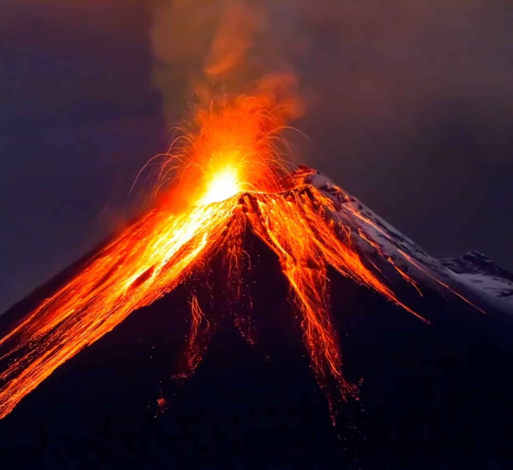

Первое настоящее путешествие
Влад никогда не выезжал из страны. Ни разу. Ни одного штампа в паспорте. Это история о том, как два человека сели на мотоциклы и проехали целый остров — туда и обратно.
Первый паром в жизни. Первый остров, который ты видишь не на экране. Балийский пролив — всего полчаса, но за это время что-то щёлкает внутри. Ветер, запах моря, мотоциклы привязаны канатами к палубе. Ты стоишь и понимаешь: всё, что было до этого — было подготовкой. Жизнь начинается сейчас.
Первое, что ты замечаешь на Яве — запахи. Гвоздика, выхлоп, жареный рис, мокрая земля. Это не Бали для туристов — здесь настоящая Индонезия. Рисовые поля до горизонта, деревни, где на тебя смотрят с любопытством, грузовики, которые идут стеной. Здесь никто не знает, кто ты. И это — освобождает.
Подъём к вулкану — первый момент, когда становится по-настоящему тяжело. Холод, от которого немеют пальцы. Темнота. Серпантин, который не заканчивается. А потом — рассвет. И ты стоишь над облаками, а под тобой — пять вулканов и дым из кратера. Ни одна фотография в интернете не передаёт того, что ты чувствуешь, когда видишь это впервые.
Внутри кальдеры — пустыня. Серый вулканический песок, ни единого дерева, ни звука кроме ветра. Мотоцикл вязнет, руль вырывает из рук. Это не то, к чему тебя готовили сериалы и ютуб. Это реальность, и она гораздо красивее, страшнее и честнее всего, что ты видел на экране.
Тысяча лет. Столько этому храму. Ты поднимаешься на верхний ярус, садишься среди каменных ступ, и смотришь на джунгли в утреннем тумане. Тишина такая, что слышишь своё сердце. Некоторые вещи нужно увидеть вживую, чтобы понять, почему люди пересекают океаны.
Тиковые леса, чайные плантации, дорога, которая петляет так, что ты забываешь, какой сегодня день. Маленький варунг на обочине: наси горенг за доллар, ледяной чай, и хозяйка, которая улыбается, потому что ты — первый иностранец за месяц. Вот оно, счастье — сидеть, есть, ни о чём не думать, и знать, что завтра будет ещё один день дороги.
Двадцать миллионов человек. Ты только что проехал 1 200 км на мотоцикле — и вот стоишь на холме, и смотришь на огромный город, который ничего о тебе не знает. Но ты знаешь о себе кое-что новое. Ты можешь. Ты смог.
На обратном пути ты уже не торопишься. Остановка у лесной дороги — и через минуту мотоциклы облеплены макаками. Одна сидит на руле, другая роется в рюкзаке. Ты смеёшься так, как не смеялся давно. Лучшие моменты случаются там, где ты не планировал останавливаться. Это знают все путешественники. Теперь знаешь и ты.
Тропический ливень застаёт на серпантине. Стена воды, видимость — два метра, одежда насквозь за секунды. Нормальные люди бы остановились. Мы — нет. Потому что есть что-то в том, чтобы ехать сквозь дождь, когда ты мокрый, уставший, и при этом смеёшься так, как не смеялся последние пять лет. Это невозможно запланировать. Это можно только прожить.
Тот же паром. Тот же пролив. Но ты — другой. Десять дней назад ты стоял здесь и не знал, что будет. Теперь знаешь. Ява остаётся в дымке, а внутри — тишина. Тишина, которая бывает только у людей, которые сделали что-то, о чём будут рассказывать всю жизнь. Теперь у тебя есть свои истории. Не чужие — свои.
Погнали?

Ладно, диван — тоже вариант. Но через 10 лет, когда будешь листать чужие фотки, вспомни этот момент. Момент, когда ты мог сказать «да» — и всё бы изменилось.
Ты сейчас буквально выбрал «не жить». Влад, ну камон. Ты ни разу не был за границей — и хочешь оставить это так?
2 400 километров. Два мотоцикла. Вулканы, храмы, ливни и рассветы, от которых перехватывает дыхание.
Бали → Джакарта → Бали.
Вадим & Влад. 2026.
Бронируй билеты. Остальное — разберёмся по дороге.